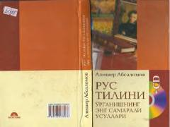

RTRus tilini tez va samarali o'zlashtirish uchun amaliy qo'llanma.
Ushbu kitob rus tilini mustaqil va samarali o'rganishni istaganlar uchun mo'ljallangan qo'llanmadir. Unda tilni qisqa vaqt ichida o'zlashtirish, ravon va to'g'ri gapirish ko'nikmalarini shakllantirishga yordam beradigan tajribada sinalgan usullar va tavsiyalar jamlangan.